Fluid Mechanics Course
Lecture 3 · Control-Volume Analysis & Potential Flow
Finite control volumes → conservation laws → ideal flow models
Francesco Ferri
AAU BUILD
Today: where are we going?
What is it?
Pressure & forces
analysis
How does it move?
Energy along a flow
Mass, momentum, energy
Idealised velocity field
The central question today: How can we turn local flow descriptions into simplified engineering balances?
Why use a control volume?
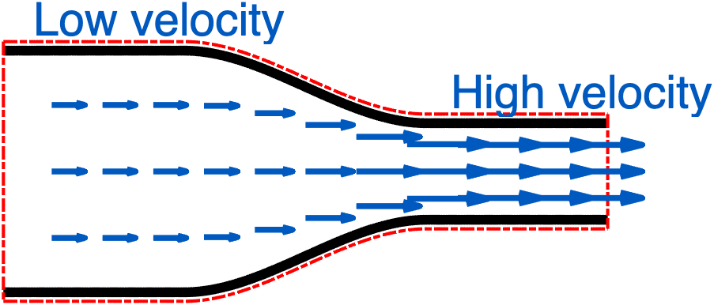
A full field description gives the most general picture of the flow:
$\mathbf V(x,y,z,t),\ p(x,y,z,t),\ldots$
But it can be more information than we need for a quick engineering calculation.
Start with a pipe restriction:
- fluid enters and leaves;
- we care about flow rate, pressure and force;
- we do not want to follow each fluid particle.
Control volume = conservation laws applied to the region of interest.
Finite control volume and differential analysis
The same conservation laws, applied at different spatial scales.
Finite control volume (This Lecture)
Examines a finite region, such as a pipe bend, pump or tank.
- Balances what accumulates inside the region and what crosses its boundary.
- Uses integral equations, often simplified using average inlet and outlet quantities.
- Finds overall quantities such as flow rate, resultant force or required pump power.
Differential analysis (Next Lectures)
Examines an infinitesimal fluid element at each position in the flow.
- Expresses conservation locally, using spatial and time derivatives.
- Uses differential equations, with boundary conditions and, for unsteady problems, initial conditions.
- Finds fields such as velocity \(\mathbf V(\mathbf x,t)\) and pressure \(p(\mathbf x,t)\).
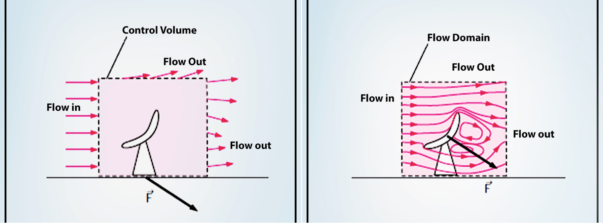
Finite Control Volume
From laws for a system to engineering balances
System versus control volume
System
- A fixed mass of fluid
- Follow the same material as it moves
- The basic conservation laws apply directly
Control volume
- A chosen region in space
- Fluid may cross its boundary
- Natural for pipes, pumps, turbines and nozzles
Same physics — different bookkeeping.
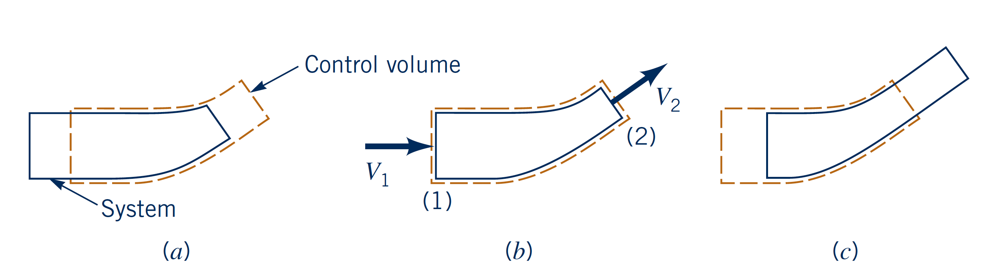
Conservation laws for a system
Mass
Linear momentum
Angular momentum
Energy
Even if these laws are relative simple to state, solving them for each fluid particle is impractical (unless we use a CFD method)
One notation for mass, momentum and energy
Let \(B\) be an extensive property and define the corresponding specific property
Mass
\(B=M\)
\(b=1\)
Momentum
\(B=\mathbf P = m \mathbf V\)
\(b=\mathbf V\)
Energy
\(B=E\)
\(b=e\)
Control-volume balance
- Mass: sources = 0
- Momentum: source = resultant external force
- Energy: sources include heat and work
Reynolds Transport Theorem
For an extensive property B , with specific property b = B/m :
- First term → rate of change inside the control volume
- Second term → net transport through the control surface
- For a fixed control volume, n points outward
RTT: how to read the surface integral
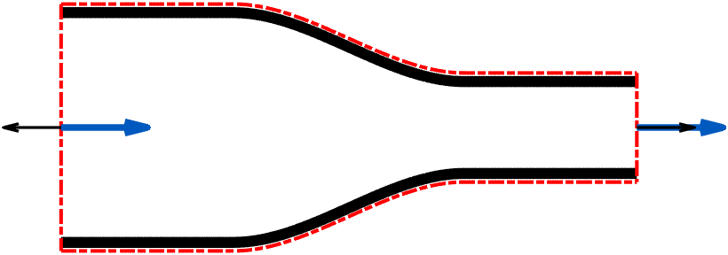
Outflow: \(\mathbf V\cdot\mathbf n = \left\| V \right\| \cos( \theta ) >0\), if \(\theta < \pi/2\).
Inflow: \(\mathbf V\cdot\mathbf n= \left\| V \right\| \cos( \theta ) <0\), if \(\theta > \pi/2\).
Mass flux: \(\dot m=\int_A\rho(\mathbf V\cdot\mathbf n)\,dA\)
$$\rho b(\mathbf V\cdot\mathbf n)$$
The sign convention is built into the dot product.
What if the control volume is moving?
A control volume may translate or deform rather than remain fixed.
- \(\mathbf V\): fluid velocity
- \(\mathbf V_{CS}\): velocity of the control surface
- Crossing is determined by the relative velocity \(\mathbf V-\mathbf V_{CS}\).
Fixed CV: \(\mathbf V_{CS}=0\) → the previous RTT is recovered.
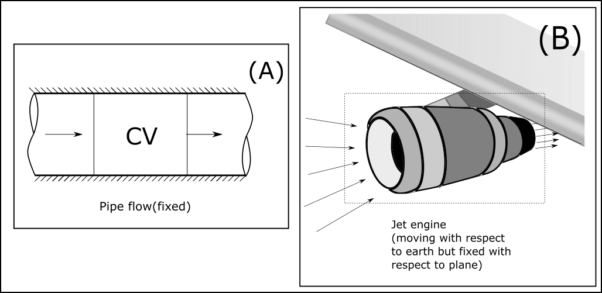
1 · Mass conservation
Continuity from RTT
Set the extensive property to mass:
Mass conservation says \(dm_{\rm sys}/dt=0\).
Steady one-dimensional flow
For steady flow, there is no accumulation of mass inside the control volume: $$ \frac{\partial}{\partial t}\int_{CV}\rho\,dV=0. $$
Therefore, $$ \int_{CS}\rho \mathbf{V}\cdot\mathbf{n}\,dA=0. $$
Split the control surface into inlets and outlets: $$ \sum_{\text{out}}\int_A \rho V_n\,dA - \sum_{\text{in}}\int_A \rho V_n\,dA =0. $$ If the flow is treated as 1-D at each inlet/outlet, so that velocity and density are uniform over each section,
for an incompressible fluid with constant density, \(\rho\) cancels: $$ \boxed{ \sum_{\text{in}} A_iV_i = \sum_{\text{out}} A_jV_j } $$
Mini-example · Pipe junction
Assumptions: Incompressible and steady flow with uniform velocity at each section.
One inlet, two outlets:
2 · Linear momentum
Newton's second law + RTT
For linear momentum, \(B=\mathbf P\) and \(b=\mathbf V\).
- Momentum is a vector → write x and y equations separately.
- Forces are also vectors → signs matter.
Steady one-dimensional momentum
Using steady flow, the accumulation term vanishes and the momentum equation reduces to
$$\sum\mathbf F_{\rm ext}=\int_{CS}\rho \mathbf V(\mathbf V\cdot\mathbf n)\,dA $$
split the CS into individual inlet and outlet areas (sum of integrals).
With the 1-D assumption, \(\rho\) and \(\mathbf V\) are taken as uniform (or represented by average values) over each \(A_i\). Therefore,
$$\int_{A_i}\rho \mathbf V(\mathbf V\cdot\mathbf n)\,dA \approx \mathbf V_i \int_{A_i}\rho(\mathbf V\cdot\mathbf n)\,dA.$$
where that last integral is the mass flow rate (sign determined by direction). Hence \[ \int_{CS}\rho \mathbf V(\mathbf V\cdot\mathbf n)\,dA = \sum_{\rm out}\dot m\,\mathbf V - \sum_{\rm in}\dot m\,\mathbf V \]
Left side: forces
- Pressure
- Weight
- Wall/support reaction
- Other applied forces
Right side: momentum flux
- Mass flow rate × velocity
- Direction is essential
Pressure forces
- \(\mathbf n\) is the outward normal of the control surface.
- Pressure pushes inward , opposite to \(\mathbf n\).
- For uniform pressure on a flat port: \(\mathbf F_p=-pA\mathbf n\).
Absolute or gauge pressure?
- Either absolute or gauge pressure can be used in the force balance.
- Gauge pressure is often simpler when atmospheric pressure acts on the surrounding exposed surfaces.
- Use one pressure reference consistently.
In the following bend example, the stated pressures are gauge pressures.
Worked example · 90° pipe bend
- Water: \(\rho=1000\ {\rm kg/m^3}\)
- \(D_1=0.10\ {\rm m}\), \(D_2=0.05\ {\rm m}\)
- \(Q=0.020\ {\rm m^3/s}\)
- \(p_1=200\ {\rm kPa}\), \(p_2=100\ {\rm kPa}\) gauge
- Horizontal bend; neglect weight
Find the force exerted by the fluid on the bend.
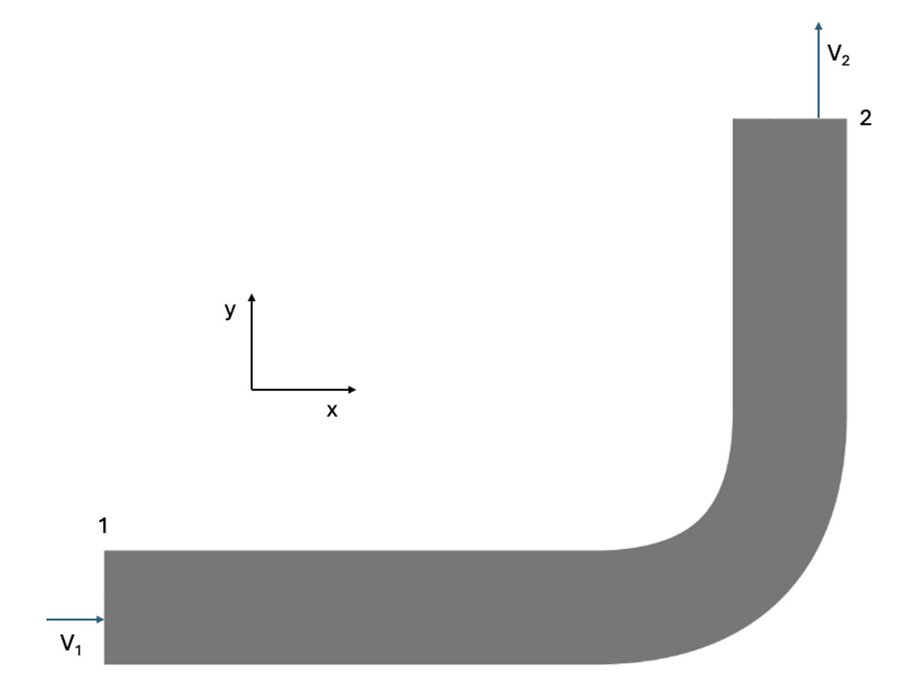
90° bend · Step 1: continuity
The smaller outlet area produces the larger velocity.
90° bend · Step 2: momentum flux
90° bend · Step 3: free-body diagram
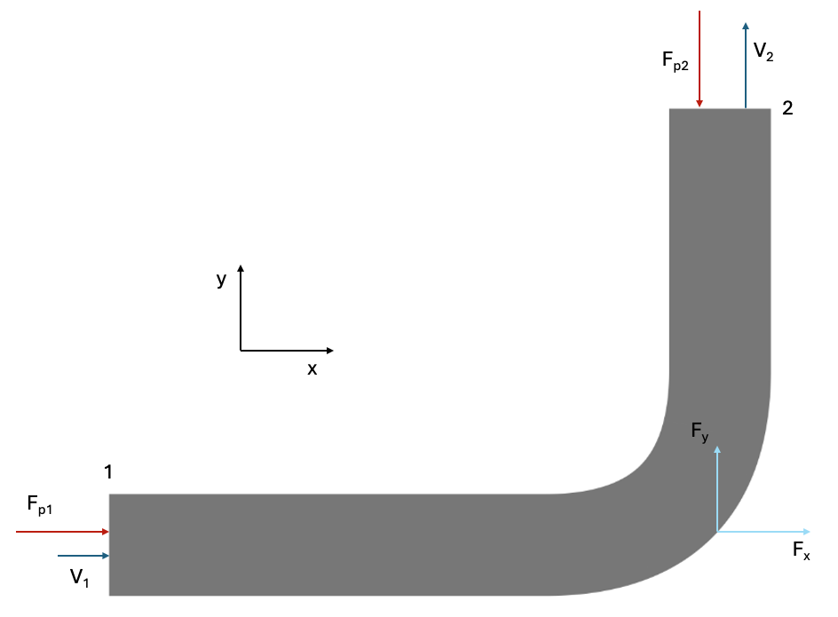
- Inlet pressure force: \(F_{p1} = +p_1A_1\,\mathbf i\)
- Outlet pressure force: \(-p_2A_2\,\mathbf j\)
- Bend/support force on the fluid: \(\mathbf R=F_x\mathbf i+F_y\mathbf j\)
- Weight neglected
Draw the force directions first; assign signs from the axes second.
90° bend · Step 4: linear-momentum
$$ \boxed{ \sum\mathbf F_{\rm ext} = \sum_{\rm out}\dot m\mathbf V - \sum_{\rm in}\dot m\mathbf V } $$x-direction
The bend pushes the fluid toward \(-x\).
y-direction
The bend pushes the fluid toward \(+y\).
90° bend · Step 5: load on the bend
Force of the bend on the fluid:
Therefore, by Newton's third law:
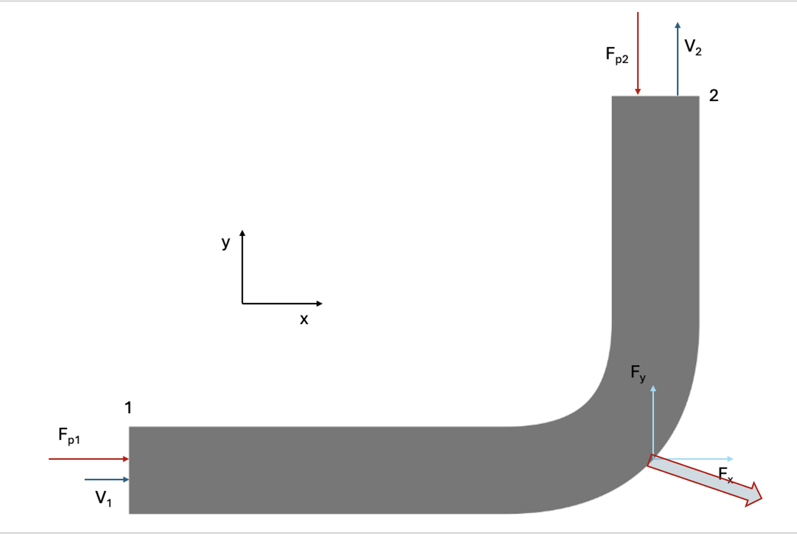
3 · Energy
Energy is another control-volume balance
The first law for a system:
with total specific energy
\(\dot Q\) is the heat added to the system, and \(\dot W\) is the work done by the system.
both \(\dot Q\) and \(\dot W\) are rate of energy transfer (power), measured in watts (W).
RTT converts the system statement to a control-volume statement.
Control-volume energy equation
The term \(p/\rho\) represents flow work , it represents the work done by the fluid to push itself into or out of the control volume. It technically belong to the work term, but it is convenient to move it to the energy flux term. \(\dot W_s\) is now the work at the shafts.
Define \(h=e_{\rm int}+p/\rho\) → enthalpy .
Steady-flow engineering energy equation
Starting from the steady-flow energy equation for one inlet and one outlet, assuming uniform h and z at each section, we haveDivide by \(\dot m\) we have: $$ q-w_s = (h_2-h_1) + \alpha_2\frac{V_2^2}{2} - \alpha_1\frac{V_1^2}{2} + g(z_2-z_1) = (e_{2, \rm int}-e_{1, \rm int}) + \frac{p_2-p_1}{\rho} + \alpha_2\frac{V_2^2}{2} - \alpha_1\frac{V_1^2}{2} + g(z_2-z_1) $$
* \(\alpha\) represents the kinetic energy correction factor, because the velocity is not uniform across the cross-section. 1 for uniform flow. 2 for laminar flow.
Engineering energy equation
Dividing the steady-flow energy equation by \(g\), we obtain the head form of the extended Bernoulli equation with losses and machinery:
pump adds energy
turbine removes energy
mechanical losses
Why is Bernoulli a special case?
Start from the engineering energy equation and impose the Bernoulli assumptions:
- steady flow;
- incompressible fluid;
- no pump or turbine: \(h_p=h_t=0\);
- no mechanical losses: \(h_L=0\);
- \(\alpha\approx1\).
Bernoulli is an energy conservation law , applied to ideal fluids under specific assumptions.
Control-volume method: a repeatable workflow
- Choose the control volume.
- Define inlet/outlet sections and coordinate axes.
- Sketch velocities, pressures and external forces.
- Select mass, momentum or energy balance.
- Simplify using steady/incompressible/1-D assumptions.
- Solve and check dimensions + physical direction.
Short pause / check
1. What is the difference between a system and a control volume?
2. Why can an inlet contribute a negative mass flux?
3. Why does momentum require a vector equation?
4. When is Bernoulli insufficient?
Potential Flow
From conservation laws to an idealised velocity field
Why is potential flow useful to engineers?
- A full viscous field solution may be too expensive or unnecessary for a first estimate (viscous term \(\mu \nabla^2\mathbf V\)).
- Away from boundary layers and wakes, some flows can be approximated as nearly inviscid.
- If the modeled region is also irrotational, velocity can be described using a scalar potential.
- We can obtain velocity, streamlines and pressure trends from relatively simple mathematics.
- Elementary solutions can be combined to create useful idealised flow patterns around bodies.
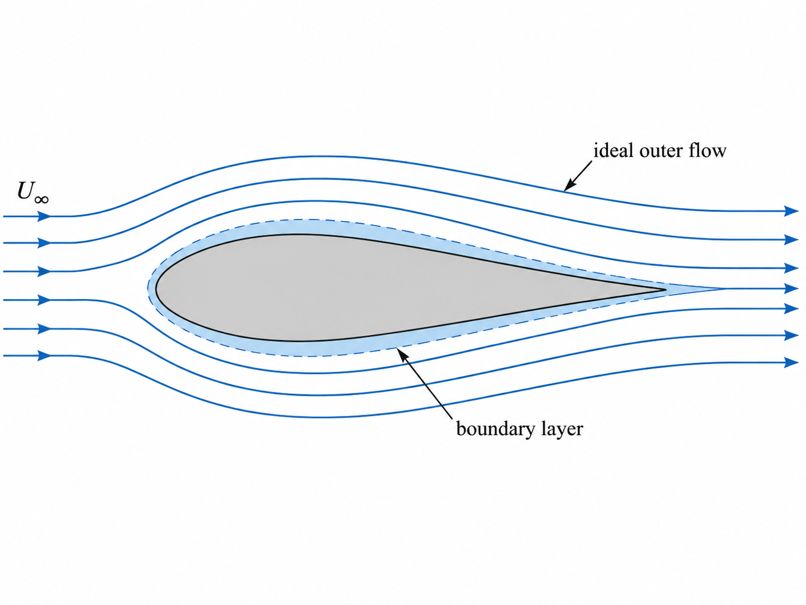
Potential flow: the role of each assumption
- Irrotational: \(\nabla\times\mathbf V=0\). A scalar potential describes velocity: \(\mathbf V=\nabla\phi\).
- Incompressible: \(\nabla\cdot\mathbf V=0\). Substituting the potential gives \(\nabla^2\phi=0\).
- Inviscid: neglect viscous stresses in the momentum equation. Bernoulli then relates the potential to pressure.
Irrotationality + incompressibility give Laplace's equation. Inviscid flow relate the potential to pressure.
Incompressible flow
Recall divergence:
An incompressible flow satisfies
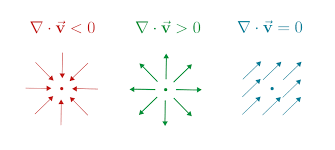
Zero divergence means that for a given volume, the net flow into the volume equals the net flow out of the volume. This is a local statement of mass conservation for an incompressible fluid.
Irrotational flow
Recall vorticity:
An irrotational flow satisfies
Zero curl makes the line integral of velocity locally path-independent. We can therefore define a scalar \(\phi\) whose spatial gradient gives \(\mathbf V\).
Velocity potential
Define a velocity potential \(\phi\) such that:
In Cartesian coordinates:
Any potential \(\phi\) gives an irrotational velocity field because \(\nabla\times\nabla\phi=0\).
Incompressibility + Irrotational → Laplace's equation
Incompressible
$$ \nabla\cdot\mathbf V=0 \\ $$ $$ \underbrace{ \frac{\partial u}{\partial x} +\frac{\partial v}{\partial y}=0 }_{\text{Incompressible flow}} $$
Irrotational
$$ \nabla\times\mathbf V=0 \Longrightarrow \mathbf V=\nabla\phi \\ $$ $$ \underbrace{ u=\frac{\partial\phi}{\partial x}, \qquad v=\frac{\partial\phi}{\partial y} }_{\text{Irrotational flow}} $$
$$ $$
Substituting gives the Laplace Equation
Laplace Equation
Laplace's equation it is a mathematical constraint. It requires boundary conditions to determine the unique solution.
Boundary conditions: fixed impermeable wall
$$ \mathbf V\cdot\mathbf n=0 \Longrightarrow \nabla\phi\cdot\mathbf n=0 \Longrightarrow \frac{\partial\phi}{\partial n}=0 $$
Boundary conditions: Inlet with prescribed velocity
$$ \mathbf V\cdot\mathbf n=V_n \Longrightarrow \nabla\phi\cdot\mathbf n=V_n \Longrightarrow \frac{\partial\phi}{\partial n}=V_n $$
Once the boundary conditions are specified for each boundary, the solution to Laplace's equation is unique.
2-D potential flow: from potential to velocity
For flow in the \(x,y\) plane, \(w=0\) and nothing varies with \(z\). Laplace's equation becomes:
After finding \(\phi(x,y)\) using the boundary conditions, differentiate it to obtain the velocity:
- Equipotential lines: lines where \(\phi=\text{constant}\).
- Streamlines: curves tangent to the local velocity. Since \(\mathbf V=\nabla\phi\), they cross equipotential lines at right angles.
How can we describe and draw these streamlines?
Stream function: a way to draw the flow
For 2-D incompressible flow, introduce a second scalar function \(\psi(x,y)\) describing the same velocity field:
Along a streamline, the displacement \((dx,dy)\) follows the velocity, so $$ \frac{dy}{dx}=\frac{v}{u} \quad\Longrightarrow\quad u\,dy-v\,dx=0. $$ Therefore:
Streamlines are curves where \(\boxed{\psi=\text{constant}}\).
The elementary flows that follow can be described using \(\phi\) to calculate velocity and \(\psi\) to plot streamlines.
Elementary potential flows
Uniform flow
Constant velocity
Source / sink
Radial flow from/to a point
Vortex
Circular velocity field
Because Laplace's equation is linear, solutions can be superposed .


Superposition: the real power of potential flow
If each \(\phi_i\) satisfies Laplace's equation, their sum also satisfies it.
Examples:
- Uniform flow + source → flow around a body-like streamline pattern
- Uniform flow + doublet → idealised flow around a cylinder
- Additional singularities can model more complex idealised patterns
Example · build a half-body
Begin with a uniform flow .

Every streamline is straight and parallel: there is no body yet.
Half-body · add a source
A source produces radial outward flow.

Because Laplace's equation is linear, we can add the two velocity potentials.
Half-body · combine the two flows

Rankine Half-body · combine the two flows
For a 2-D Rankine half-body, with uniform velocity \(U\) along \(+x\) and a source of strength \(m\) at the origin.
- A stagnation point appears upstream of the source.
- A dividing streamline separates two regions of the flow.
- That dividing streamline can be interpreted as the surface of an idealised Rankine half-body and it is the specific streamline that pass for the stagnation point. \[ \mathbf V \cdot \mathbf n = 0 \rightarrow \frac{\partial \phi}{\partial n} = 0\]
Potential flow and Bernoulli
For steady, inviscid flow of constant density, with gravity:
Irrotationality makes \(C\) the same throughout a connected flow region.
Once \(\phi\) is known, calculate \(\mathbf V=\nabla\phi\) and use a known pressure at a reference point \(R\):
Pressure from potential flow: example
Assume steady, inviscid water flow in a horizontal plane, with \(\rho=1000\,\mathrm{kg/m^3}\) and potential
At \(R=(1,0)\,\mathrm m\): \(V_R=1\,\mathrm{m/s}\), \(p_R=100\,\mathrm{kPa}\).
At \(P=(2,0)\,\mathrm m\): \(V_P=2\,\mathrm{m/s}\), with \(z_P=z_R\).
The higher speed corresponds to a pressure drop of \(1.5\,\mathrm{kPa}\).
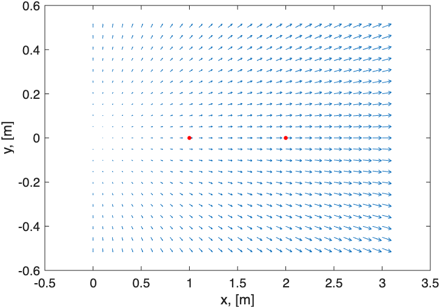
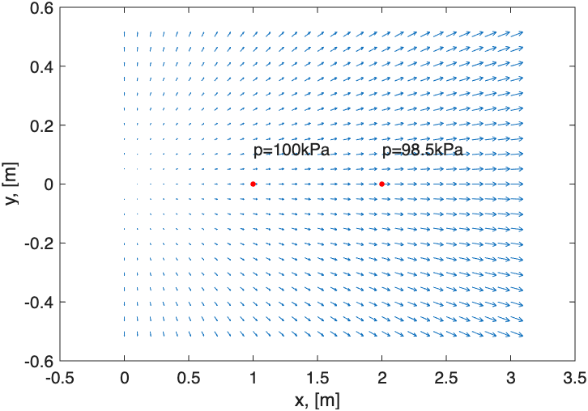
Unsteady potential flow and Bernoulli
For constant-density, irrotational flow, the potential can vary with time:
For inviscid flow with gravity, Euler's equation gives
\(\partial\phi/\partial t\) adds the unsteady pressure contribution. A pressure reference fixes \(C(t)\) for the chosen potential.
What potential flow does — and does not — capture
Can describe
- Outer flow away from strong viscous effects
- Velocity distributions
- Pressure distributions via Bernoulli
- Flow topology and superposition
Cannot by itself describe
- Viscous shear stresses
- Boundary-layer losses
- Most separated-flow behaviour
- Real wake dissipation
Potential flow is a useful idealisation, but it does not capture viscous effects. It can be used to estimate outer-flow velocity and pressure patterns, but it cannot predict boundary-layer growth, separation or wake dissipation.
Putting the course together
Today’s key equations
Mass
Momentum
Potential flow
Moving CV: replace \(\mathbf V\cdot\mathbf n\) in the transport term by \((\mathbf V-\mathbf V_{CS})\cdot\mathbf n\).
Takeaway
- Control volumes give quantitative engineering balances without tracking individual fluid particles.
- RTT translates system conservation laws into control-volume form.
- Momentum connects changes in momentum flux to forces — as in bends and hoses.
- Energy contains Bernoulli as an ideal special case.
- Potential flow gives an idealised velocity field when inviscid/irrotational assumptions are appropriate.
- Superposition lets simple solutions generate useful body-like flow patterns.